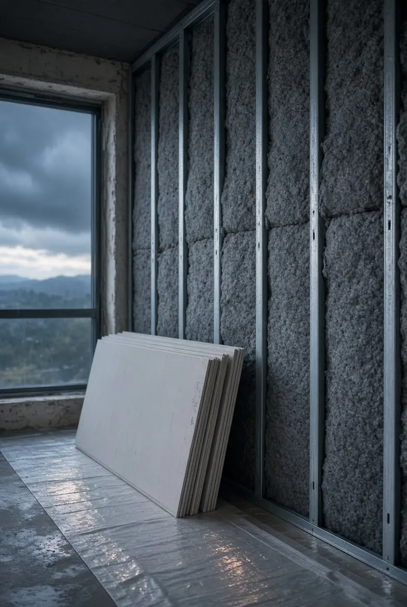
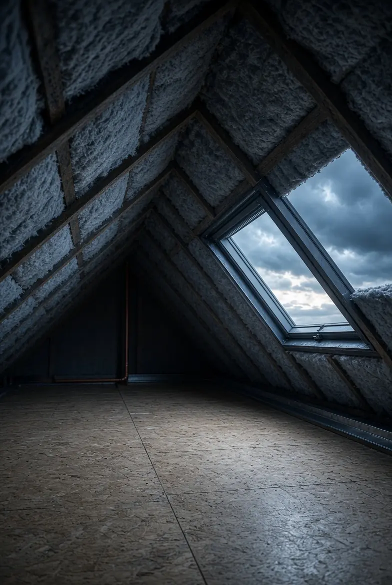
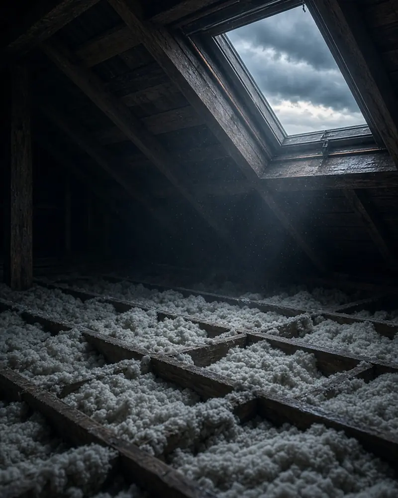
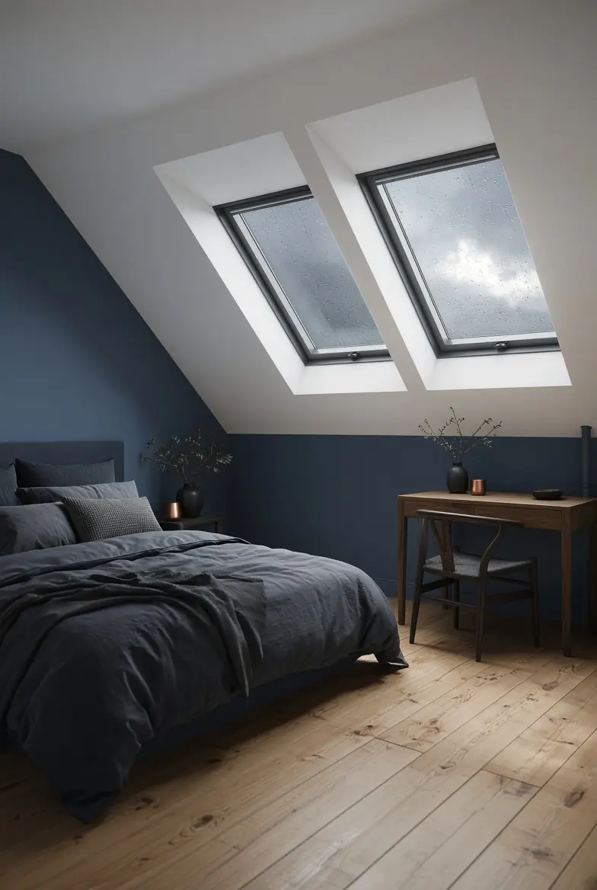
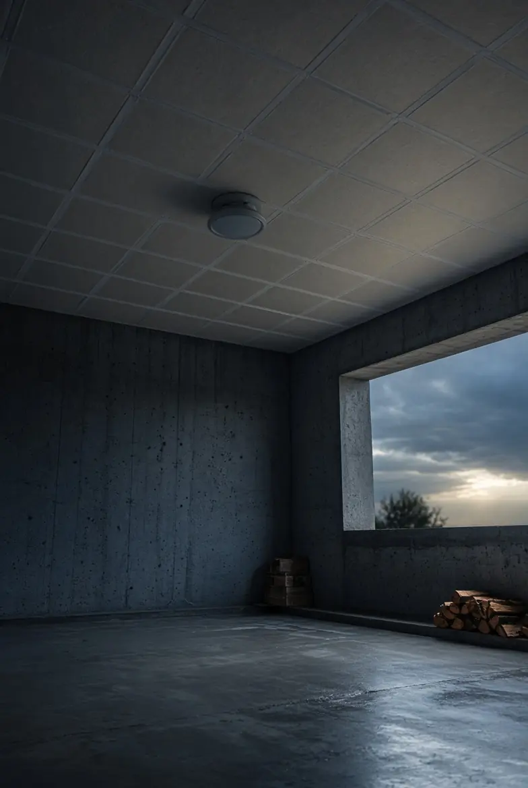

Isolation thermique intérieure
Améliorez le confort de votre maison et réduisez vos factures grâce à une isolation performante par l’intérieur.
Améliorez votre confort thermique et réalisez des économies d’énergie grâce à une isolation performante, du sol au toit.
Où part la chaleur ?
Dans une maison non isolée, la chaleur s’échappe partout. Touchez une zone pour voir sa part des pertes, puis isolez la maison.
Ordres de grandeur pour une maison individuelle non isolée construite avant 1974. Source : ADEME.
25 à 30 %des pertes de chaleur
L’air chaud monte : sans isolant dans les combles, c’est la première fuite de chaleur de la maison.
20 à 25 %des pertes de chaleur
Des murs non isolés refroidissent les pièces. On les isole par l’intérieur ou par l’extérieur, selon la place disponible et la façade.
10 à 15 %des pertes de chaleur
Les vitrages laissent aussi filer la chaleur. Dans les combles, la fenêtre de toit fait partie de l’isolation.
7 à 10 %des pertes de chaleur
Un sol froid au rez-de-chaussée vient souvent d’un sous-sol ou d’un vide sanitaire non isolé.
5 à 10 %des pertes de chaleur
Aux jonctions entre murs, planchers et toiture, l’isolant s’interrompt et la chaleur s’échappe.
Les 6 prestations isolation
Isolation intérieure, extérieure, des combles ou des planchers bas : nous adaptons la méthode à votre habitat. Nous utilisons des matériaux efficaces et durables, pour un bien-être accru été comme hiver, et une maison économe en énergie.

Améliorez le confort de votre maison et réduisez vos factures grâce à une isolation performante par l’intérieur.

Améliorez votre confort et réduisez vos factures en isolant vos murs par l’extérieur — sans perdre de place à l’intérieur !

Aménagez ou isolez vos combles pour gagner de l’espace, améliorer votre confort thermique et valoriser votre maison.

Isolez vos combles perdus pour améliorer immédiatement le confort thermique de votre maison et faire des économies d’énergie.

Transformez vos combles en un véritable espace de vie confortable, lumineux et isolé, sans déménager.

Évitez les pertes de chaleur et l’humidité en isolant efficacement votre sous-sol ou vide-sanitaire.
Aides à la rénovation
Les fiches isolation du site actuel mentionnent MaPrimeRénov’, les CEE et la TVA réduite. Ces aides dépendent du logement, des revenus et des travaux.
À valider MaPrimeRénov’ et CEE seulement si H-Renovation est certifiée RGE : certificat à fournir, sinon retirer ces mentions
Une fuite, une mousse, un doute ?
Décrivez ce que vous voyez : vous saurez quoi faire, et le devis est gratuit.